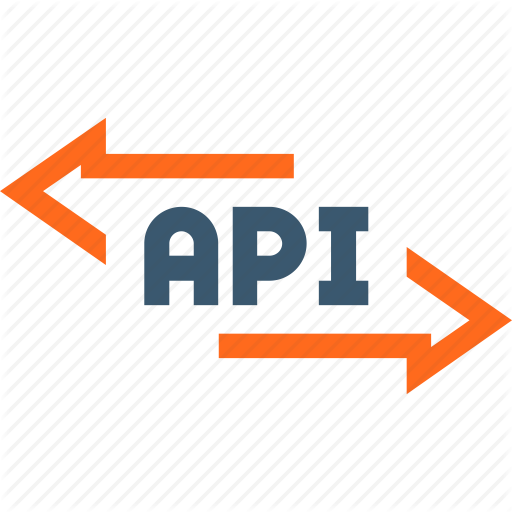

amwd
Angus Macrae | Web Developer
#who I am
I am a self-taught developer from the UK, currently employed in a frontend role near Birmingham. I love writing clean code and building great looking and functional websites. Check out my work to see what I mean!
I'm also available to take on freelance projects. Contact me to discuss.
#what I can do
I'm always learning and eager to take on new challenges. Below is a list of some of the technologies with which I am proficient. My current focus is on React and JavaScript and expanding my design skills.
 HTML
HTML CSS
CSS JavaScript
JavaScript React
React Vue
Vue SASS (SCSS)
SASS (SCSS) Git
Git GitHub
GitHub PHP
PHP MySQL
MySQL Node
Node NPM
NPM Express
Express MongoDB
MongoDB- Bootstrap
 jQuery
jQuery WordPress
WordPress- Photoshop
- APIs
- Responsive Web Design
I'm a natural problem solver with three years of professional experience and excellent soft skills, and I'm also fluent in Mandarin!
#portfolio of work
The projects presented here have been selected to demonstrate a variety of skills, and are a mixture of freelance work, personal projects, and learning exercises.
For each one, there is link to view the live site and, if applicable, to the relevant GitHub repository where you can see the code.
I also sometimes mess around in CodePen making UI components.
mattwritesart
- React
- JavaScript
- CSS
- Responsive Web Design
Gallery/shop website for a London-based artist, made with React. Artwork can be browsed, filtered and purchased. Form submissions are handled by JavaScript and notifications are relayed to the artist.
The project started with discussions about the client's requirements and brainstorming sessions regarding the design and functionality. Subsequently, I created mockups of each page and iterated the designs based on the client's feedback, before writing the code.
The website is fully responsive and looks as good on a small phone as it does on a 4k desktop monitor. This was achieved using a mixture of CSS functions (min, max, clamp), responsive units (vw, vh, vmin) and the usual media queries.
Mind Garden
- PHP
- PostgreSQL
- Bootstrap
- JavaScript
A diary/notes website with a PHP and PostgreSQL backend that provides a login/signup system and a database of users and their saved content. Old entries can be changed and deleted, and any changes are automatically saved as the user types.
The front end was built with a mixture of Bootstrap and custom CSS.
Make your own account or log in with email address example@example.com and password asdf to see how it works.
Note: Hosted on Heroku's free tier, so may be slow to load initially.
Lift Sim
- JavaScript
- Drag & Drop API
- SASS
A simulation of a lift serving a building of impatient passengers. The user can add passengers to different floors and watch as the lift follows an optimised path to deliver them all to their destinations.
This was built as an exercise in object-oriented vanilla JS, and makes use of the HMTL5 Drag & Drop API. Async functions and promises were used to chain operations.
Note: Currently doesn't work on touchscreens.
Solar System Explorer
- Vue
- SASS
- Node
- Express
- MongoDB
Explore the solar system! Full-stack app that provides an interactive animated model of our little corner of the galaxy in order to help users learn about the various planets and moons.
Vue and SASS were used for the frontend, while the backend API was made with Node/Express & MongoDB and hosted on Heroku.
Note: This app is a work in progress.
Hanzi Quest
- HTML
- CSS
- JavaScript
- Chart.js
A tool for estimating how many Chinese characters the user knows. Built with custom CSS and vanilla Javascript and uses a custom implementation of the Elo skill rating algorithm. Chart.js was used for the results chart which is displayed after the test is complete.
If you don't know Chinese but you'd like to see how the test results are displayed, just hit the "yes" button a few times and then alternate yes/no. This will approximately simulate the answer profile of a real test attempt.
Bubble-it!
- Vue
- CSS
- JavaScript
- Rough.js
I'm a huge fan of bubble tea and love writing code, so I combined the two. Bubble-it is a widget for customising bubble tea orders.
Users can select the drink size, topping, sweetness etc and the image updates reactively to display their selected configuration.
The app was made with Vue, and SVGs were used to achieve the hand-sketched visual style.
#contact me
Do you need a website? I'd love to work with you, regardless of the nature and scope of your project. Just fill in the form below to get the ball rolling.
Alternatively, if you are a recruiter or company looking for a developer and you think I'd be a good fit, please also don't hesitate to get in touch. I will get back to you with a full CV via email.